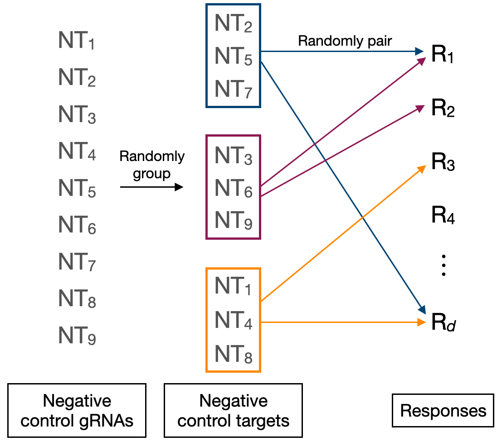
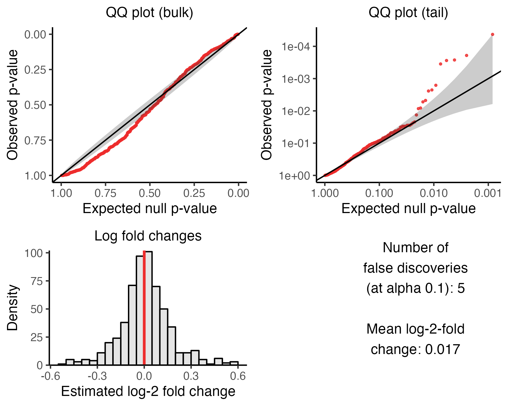

5 Run calibration check
The fifth step of the pipeline is to run the calibration check. The calibration check involves applying sceptre to analyze negative control target-response pairs — pairs for which we know there is no association between the target and response — to ensure control of the false discovery rate. The calibration check enables us to verify that the discovery set that sceptre ultimately produces is not contaminated by excess false positives.
We begin by loading sceptre.
We initialize sceptre_objects corresponding to the low-MOI CRISPRko data and high-MOI CRISPRi data. We call the pipeline functions that precede run_calibration_check() (namely, import_data(), set_analysis_parameters(), assign_grnas(), and run_qc()) on both datasets.
# low-MOI CRISPRko data
# 1. import data
sceptre_object_lowmoi <- import_data(
response_matrix = lowmoi_example_data$response_matrix,
grna_matrix = lowmoi_example_data$grna_matrix,
extra_covariates = lowmoi_example_data$extra_covariates,
grna_target_data_frame = lowmoi_example_data$grna_target_data_frame,
moi = "low"
)
positive_control_pairs <- construct_positive_control_pairs(sceptre_object_lowmoi)
discovery_pairs <- construct_trans_pairs(
sceptre_object = sceptre_object_lowmoi,
positive_control_pairs = positive_control_pairs,
pairs_to_exclude = "pc_pairs"
)
# 2-4. set analysis parameters, assign gRNAs, run qc
sceptre_object_lowmoi <- sceptre_object_lowmoi |>
set_analysis_parameters(
discovery_pairs = discovery_pairs,
positive_control_pairs = positive_control_pairs
) |>
assign_grnas() |>
run_qc(p_mito_threshold = 0.075)# high-MOI CRISPRi data
# 1. import data
sceptre_object_highmoi <- import_data(
response_matrix = highmoi_example_data$response_matrix,
grna_matrix = highmoi_example_data$grna_matrix,
grna_target_data_frame = grna_target_data_frame_highmoi,
moi = "high",
extra_covariates = highmoi_example_data$extra_covariates,
response_names = highmoi_example_data$gene_names
)
positive_control_pairs <- construct_positive_control_pairs(sceptre_object_highmoi)
discovery_pairs <- construct_cis_pairs(sceptre_object_highmoi,
positive_control_pairs = positive_control_pairs,
distance_threshold = 5e6
)
# 2-4. set analysis parameters, assign gRNAs, run qc
sceptre_object_highmoi <- sceptre_object_highmoi |>
set_analysis_parameters(
discovery_pairs = discovery_pairs,
positive_control_pairs = positive_control_pairs,
side = "left"
) |>
assign_grnas(parallel = TRUE) |>
run_qc(p_mito_threshold = 0.075)We are now ready to run the calibration check.
5.1 Calibration check methodology
We begin by describing the methodology underlying the calibration check (Barry et al. 2023).
5.1.1 Differential expression paradigm
The goal of the calibration check is to test for association between subsets of negative control gRNAs and responses. Suppose for simplicity that we are conducting a singleton analysis, i.e. suppose that we seek to test for association between an individual negative control gRNA and a response. The “treatment group” is the set of cells containing the given non-targeting gRNA, and the “control group” is the set of cells against which the treatment group is compared to carry out the test of association. The control group can be either the complement set or the NT cells. Within the context of the calibration check analysis, the complement set consists of the cells that do not contain the given non-targeting gRNA; the NT cells, on the other hand, consist of the cells that contain any non-targeting gRNA excluding the given non-targeting gRNA that we are testing for association against the response (see Figure 5.1). sceptre carries out the test of association by testing for differential expression of the response across the treatment and control groups, yielding a p-value.
sceptre tests for differential expression of the given response across the treatment and control groups, yielding a p-value for the test of association bewteen the given non-targeting gRNA and the response.5.1.2 Constructing the negative control pairs
The calibration check involves forming a set of negative control target-response pairs and then testing these pairs for association to ensure control of the false discovery rate. sceptre automatically constructs the negative control pairs, and it does so in such a way that the negative control pairs are highly similar to the discovery pairs, the difference being that the negative control pairs are devoid of biological signal. sceptre builds the negative control pairs as follows. First, sceptre forms “negative control groups” by randomly grouping together distinct sets of negative control gRNAs. For example, in a screen containing nine negative control gRNAs (labeled NT1- NT9), gRNAs NT2, NT5, and NT7 might be assigned randomly to one group, gRNAs NT3, NT6, and NT9 might be assigned randomly to another group, and so on. (See schematic below). The number of negative control gRNAs per group (by default) is set equal to the median number of gRNAs per discovery target. For example, in a screen in which each discovery target is targeted by three gRNAs, each negative control group is formed by randomly putting together three negative control gRNAs. The negative control gRNA groups can (and often do) overlap; for example, a given NT gRNA (e.g., NT2) could be a part of multiple negative control groups.

In a singleton analysis (i.e., an analysis in which we seek to test for association between individual gRNAs and responses), each negative control gRNA is placed into its own negative control group of size one. (Recall from Section 2.4 that we can prompt sceptre to run a singleton analysis by setting grna_integration_strategy to "singleton" in set_analysis_parameters()). We often use the term “negative control target” interchangeably with “negative control gRNA group.”
After forming the negative control targets, sceptre constructs the set of negative control pairs by randomly pairing the negative control targets to the responses. The number of negative control pairs that sceptre constructs is set equal to the number of pairs in the discovery set (after QC is applied to the discovery pairs). Moreover, the negative control pairs are subjected to the same pairwise QC as the discovery pairs. In this sense the negative control pairs are “matched” to the discovery pairs in three respects: (1) the number of gRNAs contained within each target is the same across the negative control and discovery pairs; (2) the negative control pairs are subjected to the same pairwise QC as the discovery pairs; (3) the number of negative control pairs is equal to the number of discovery pairs.
5.1.3 Analyzing the negative control pairs
The calibration check entails testing for association between the negative control targets and the responses to which the negative control targets have been paired. If grna_integration_strategy is set to "singleton", the analysis proceeds as described in Section 5.1.1. If grna_integration_strategy is set to "union" (the default), negative control gRNAs contained within a given negative control target are combined via the union operation; this combined gRNA is then tested for association against the responses as if it were a singleton gRNA. Consider again Figure 5.1. Suppose that NT1 and NT2 constitute a given negative control target, and suppose we seek to test for association between this negative control target and a given response. The “treatment group” in this case would be the cells containing either NT1 or NT2. Meanwhile, the “complement set” would consist of cells that do not contain NT1 or NT2. Finally, the “NT cells” would consist of cells containing NT3.
5.2 Running the calibration check
We carry out the calibration check by calling the function run_calibration_check() on the sceptre_object. run_calibration_check() takes the arguments sceptre_object (required), n_calibration_pairs (optional), calibration_group_size (optional), print_progress (optional), and parallel (optional), and output_amount (optional). n_calibration_pairs is the number of negative control target-response pairs to test for association. By default n_calibration_pairs is set to the number of discovery target-response pairs that passes pairwise QC. Next, calibration_group_size is the number of negative control gRNAs to put together to construct each negative control target. By default calibration_group_size is set to the median number of gRNAs per discovery target. Finally, print_progress and parallel control whether to print updates to the console and run the computation in parallel, respectively. We describe the output_amount argument in a subsequent section. Below, we run the calibration check on the high-MOI CRISPRi and low-MOI CRISPRko data, setting parallel to TRUE.
sceptre_object_highmoi <- run_calibration_check(
sceptre_object = sceptre_object_highmoi,
parallel = TRUE
)
sceptre_object_lowmoi <- run_calibration_check(
sceptre_object = sceptre_object_lowmoi,
parallel = TRUE
)We can plot the outcome of the calibration check by calling plot() on the resulting sceptre_object. We plot the outcome of the calibration check on the low-MOI CRISPRko data.
plot(sceptre_object_lowmoi)We described Section 5 of The whole game how to interpret this figure. Briefly, the upper left (resp., right) plot is a QQ plot of the negative control p-values on an untransformed (resp., transformed) scale; the p-values should lie predominantly along the diagonal line. The lower left plot is a histogram of the estimated (log-2) fold changes; the histogram should be symmetric and centered about zero. Finally, the lower right panel is a text box displaying the number of false discoveries made on the negative control pairs (after applying the multiple testing adjustment) and the mean estimated (log-2) fold change. Both of these numbers ideally should be close to zero. (It is OK if the number of false discoveries is nonzero; see next section.)
We can obtain a data frame containing the results by calling get_result on the sceptre_object, setting analysis to "run_calibration_check".
calibration_result <- get_result(
sceptre_object = sceptre_object_lowmoi,
analysis = "run_calibration_check"
)
head(calibration_result) response_id grna_target n_nonzero_trt n_nonzero_cntrl pass_qc
1: SLC8B1 NTg4&NTg7&NTg8&NTg9 236 162 TRUE
2: UBE2L6 NTg1&NTg5&NTg7&NTg10 982 812 TRUE
3: TMEM37 NTg3&NTg4&NTg5&NTg9 46 18 TRUE
4: PARPBP NTg3&NTg8&NTg9&NTg10 51 61 TRUE
5: MTMR10 NTg1&NTg3&NTg8&NTg10 87 250 TRUE
6: RP11-799D4.4 NTg2&NTg3&NTg4&NTg7 25 44 TRUE
p_value log_2_fold_change significant
1: 0.0000955005 0.23780413 FALSE
2: 0.0003396914 0.05625781 FALSE
3: 0.0004477911 0.56398692 FALSE
4: 0.0010338764 0.53570790 FALSE
5: 0.0010732514 -0.39425294 FALSE
6: 0.0011500039 -0.64984993 FALSEEach row of this data frame corresponds to a negative control target-response pair. The columns response_id and grna_target indicate the response and target that make up a given negative control target-response pair. The individual non-targeting gRNAs that form a negative control target are listed, concatenated into a string via the ampersand (“&”) separator. (For example, the negative control gRNA target “NTg4&NTg7&NTg8&NTg9” was formed by combining the negative control gRNAs NTg4, NTg7, NTg8, and NTg9.) The remaining columns of the data frame are as follows: n_nonzero_trt (the number of nonzero treatment cells of a given pair), n_nonzero_cntrl (the number of nonzero control cells of a given pair), pass_qc (whether a given pair passes pairwise QC), p_value (the p-value of a given pair), log_2_fold_change (the estimated log-2 fold change of a given pair), and significant (whether a given pair is called as significant after applying the multiple testing correction adjustment).
5.3 Diagnosing miscalibration
The negative control p-values may demonstrate miscalibration, which is a deviation of the p-values from the expected uniform distribution under the null hypothesis. Indicators of miscalibration include (i) the presence of points that lie considerably above or below the diagonal line on the negative control QQ plots and (ii) a large number of false discoveries on the negative control data. Miscalibration is problematic because it suggests that sceptre does not control the rate of false discoveries on the dataset under analysis. Miscalibration can be more or less severe; the table below provides a rough guideline for interpreting miscalibration severity as a function of the number of false discoveries made on the negative control data.
| Number of false discoveries | Calibration quality |
|---|---|
| 0-1 | Excellent calibration |
| 2-6 | Mild miscalibration |
| 7-14 | Moderate miscalibration |
| 15+ | Severe miscalibration |
sceptre could demonstrate miscalibration on a single-cell CRISPR screen dataset due to three main reasons: sparsity, the omission of relevant covariates, and model misspecification. Sparsity — the presence of a large proportion of zeros in the response UMI count matrix — can cause the skew-normal approximation to the distribution of the null test statistics to break down, resulting in miscalibrated p-values. Additionally, the omission of important covariates (such as batch or biological replicate) from the model or misspecification of the underlying negative binomial GLM (due, for example, to the presence of outlier cells) also can lead to miscalibration. Pairwise and cellwise QC (Chapter 4) provide the first line of defense against sparsity and model misspecification, respectively. Furthermore, the resampling methodology of sceptre protects against misspecification of the negative binomial GLM. In spite of these safeguards, sceptre may still exhibit miscalibration on some datasets.
To provide an example of miscalibration, we again run the calibration check on the high-MOI CRISPRi data, this time setting formula_object to formula(~log(grna_n_umis)), thereby excluding batch, response_n_umis, and other important covariates.
sceptre_object_highmoi <- sceptre_object_highmoi |>
set_analysis_parameters(
discovery_pairs = discovery_pairs,
positive_control_pairs = positive_control_pairs,
side = "left",
formula_object = formula(~ log(grna_n_umis))
) |>
assign_grnas(parallel = TRUE) |>
run_qc()
sceptre_object_highmoi <- run_calibration_check(
sceptre_object = sceptre_object_highmoi,
parallel = TRUE
)We create a plot to visualize the outcome of the calibration check analysis.
plot(sceptre_object_highmoi)
The negative control p-values no longer lie completely along the diagonal line in the QQ plots; a handful of p-values in the tail of the distribution, for example, trends markedly above the diagonal. Moreover, sceptre has made five false discoveries. This is an example of mild miscalibration, per Table 5.1.
What should one do in the event that sceptre exhibits miscalibration? If the miscalibration is mild, we recommend proceeding to the next steps of the pipeline (i.e., the power check and discovery analysis). We note that it may not possible to obtain perfect calibration (using sceptre or any other method) on a given dataset, as the dataset may pose fundamental challenges to calibration that are unresolvable. Moreover, it may not be preferable to obtain perfect calibration either, as a mild reduction in miscalibration sometimes leads to a substantial loss of power. If the miscalibration is moderate to severe, we recommend attempting to alleviate the miscalibration using one or more of the strategies described below.
5.4 Improving calibration
There are several concrete steps that users can take to improve the calibration of sceptre. We list five of the most important strategies here, ordered roughly from most to least promising. These strategies need not be applied one-at-a-time and instead can be mixed and matched.
-
Deactivate the parametric curve fitting functionality.
sceptreby default computes the p-value for a given target-response pair by fitting a parametric curve (specifically, a skew-normal density) to the distribution of null test statistics and then evaluating the tail probability of the fitted curve at the observed test statistic (Section 2.8). If the parametric curve provides a poor fit to the distribution of the null test statistics, the resulting p-value can be miscalibrated. Users can deactivate the parametric curve fitting functionality ofsceptreand instead return an exact p-value by settingfit_parametric_curvetoFALSEinset_analysis_parameters(), as follows.sceptre_object_highmoi <- sceptre_object_highmoi |> set_analysis_parameters( discovery_pairs = discovery_pairs, positive_control_pairs = positive_control_pairs, side = "left", fit_parametric_curve = FALSE # fit_parametric_curve set to FALSE )The calibration check, power check, and discovery analyses all run more slowly when
fit_parametric_curveis set toFALSE, assceptremust compute a greater number of null test statistics to preserve adequate precision of the p-values. Thus, settingfit_parametric_curvetoFALSEmay not be a feasible strategy for users seeking to test a large number (e.g., 10,000+) of pairs. Users should consider using the permutation test (resampling_mechaism = "permutations") rather than the conditional randomization test (resampling_mechanism = "crt") when settingfit_parametric_curvetoFALSEto improve speed.sceptre_object_highmoi <- sceptre_object_highmoi |> set_analysis_parameters( discovery_pairs = discovery_pairs, positive_control_pairs = positive_control_pairs, side = "left", fit_parametric_curve = FALSE, # slows down the code resampling_mechanism = "permutations" # speeds up the code ) Add additional covariates.
sceptremay be miscalibrated because important covariates are missing. Users should consider whether any additional covariates are relevant and, if so, add these covariates to thesceptre_objectviaimport_data()orimport_data_from_cellranger(). For example, cell type should be included as a covariate if the data contain multiple cell types. Batch, biological replicate, and cell cycle also may be relevant. (sceptredoes not currently provide functionality for imputing cell type or cycle.)-
Tighten the QC thresholds. Users can tighten the cellwise and pairwise QC thresholds to remove outlier cells and target-response pairs with a low effective sample size, respectively, thereby ameliorating challenges to calibration due to sparsity and model misspecification. Below, we increase
n_nonzero_trt_threshandn_nonzero_cntrl_threshto 15; the default value for these parameters is 10. We additionally setresponse_n_umis_rangetoc(0.05, 0.95), which clips theresponse_n_umisdistribution at the fifth and ninety-fifth percentiles (as opposed the the first and ninety-ninth percentiles, which is the default). -
Change the resampling mechanism or the control group.
sceptreprovides two options for the resampling mechanism (namely,"permutations"or"crt"; see Section 2.7) and two options for the control group (namely,"complement_set"or"nt_cells"; see Section 2.5). (Note that"nt_cells"is available as an option only in low-MOI screens.) Switching the resampling mechanism and/or the control group may improve calibration. Below, we set the resampling mechanism to"crt"and the control group to"complement_set"on the low-MOI CRISPRko data; these choices are the opposites of the defaults.sceptre_object_lowmoi <- sceptre_object_lowmoi |> set_analysis_parameters( sceptre_object = sceptre_object_lowmoi, discovery_pairs = discovery_pairs_lowmoi, positive_control_pairs = positive_control_pairs_lowmoi, resampling_mechanism = "crt", control_group = "complement_set" ) -
Test fewer pairs. Obtaining good calibration becomes increasingly challenging as the number of target-response pairs in the discovery set grows. This is because the p-values must maintain uniformity further and further out into the tail of the distribution. A simple strategy to improve calibration is to reduce the number of target-response pairs by more selectively choosing pairs for inclusion in the discovery set. For example, we could construct the discovery set for the high-MOI CRISPRi data by coupling each candidate enhancer to the set of genes within one megabase of that candidate enhancer (as opposed to five megabases, as we have done previously). This change reduces the number of pairs in the discovery set (before applying QC) from 610 to 353, which makes obtaining good calibration considerably easier.
discovery_pairs <- construct_cis_pairs(sceptre_object_highmoi, positive_control_pairs = positive_control_pairs, distance_threshold = 1e6 # previous value: 5e6 ) sceptre_object_highmoi <- sceptre_object_highmoi |> set_analysis_parameters( discovery_pairs = discovery_pairs, positive_control_pairs = positive_control_pairs, side = "left" )Users also could more aggressively prioritize pairs for inclusion in the discovery set by leveraging orthogonal information, such as (single-cell) ATAC-seq or ChIP-seq data.
5.5 The output_amount argument
The function run_calibration_check() has the optional argument output_amount, which controls the amount of information that run_calibration_check() returns. output_amount can be set to 1, 2, or 3, with 1 (the default) returning the least information, 2 returning an intermediate amount of information, and 3 returning the most information. Setting output_amount to 2 causes several additional columns to be appended to the calibration check result data frame. To illustrate, we again run the calibration check on the low-MOI CRISPRko data, this time setting output_amount to 2.
sceptre_object_lowmoi <- run_calibration_check(sceptre_object_lowmoi,
parallel = TRUE,
output_amount = 2
)sceptre_object_lowmoi |>
get_result(analysis = "run_calibration_check") |>
head() response_id grna_target n_nonzero_trt n_nonzero_cntrl pass_qc
1 SLC8B1 NTg4&NTg7&NTg8&NTg9 236 162 TRUE
2 UBE2L6 NTg1&NTg5&NTg7&NTg10 982 812 TRUE
3 TMEM37 NTg3&NTg4&NTg5&NTg9 46 18 TRUE
4 PARPBP NTg3&NTg8&NTg9&NTg10 51 61 TRUE
5 MTMR10 NTg1&NTg3&NTg8&NTg10 87 250 TRUE
6 RP11-799D4.4 NTg2&NTg3&NTg4&NTg7 25 44 TRUE
p_value log_2_fold_change stage z_orig xi omega alpha
1 0.0000955005 0.23780413 2 3.923777 0.2540283 1.040114 -0.3198038
2 0.0003396914 0.05625781 2 3.694460 -0.2677594 1.059273 0.3626879
3 0.0004477911 0.56398692 2 3.327821 -0.4200504 1.018417 0.4496051
4 0.0010338764 0.53570790 2 3.387342 -0.7116245 1.180715 0.8571695
5 0.0010732514 -0.39425294 2 -3.177835 -0.6407830 1.187394 0.8827759
6 0.0011500039 -0.64984993 2 -3.224238 0.2756485 1.027669 -0.3098954
significant
1 FALSE
2 FALSE
3 FALSE
4 FALSE
5 FALSE
6 FALSETo explain what the additional columns represent, we must first provide further details about how the sceptre methodology works. sceptre uses an adaptive resampling scheme to reduce compute. For a given target-response pair, sceptre first computes the observed z-score \(z_\textrm{obs}\) and a small number \(B_1\) of null z-scores (where \(B_1 \approx 500\)). The original z-score is compared to the null z-scores to compute a “stage 1” p-value \(p_1\). If \(p_1\) falls below some threshold (set to 0.02), then sceptre computes a large number \(B_2\) of fresh null z-scores (where \(B_2 \approx 5,000\)). A skew-normal distribution is fit to the \(B_2\) fresh null z-scores, and a “stage 2” p-value \(p_2\) is computed by evaluating the tail probability of the fitted skew-normal distribution at the observed z-score. The goodness of fit of the skew-normal distribution is assessed. If the fit is poor, then sceptre computes a third set of \(B_3\) null z-scores (where \(B_3 \approx 25,000\)), and a “stage 3” p-value is computed by comparing the original z-score to this third set of null z-scores.
The columns appended to the result data frame when output_amount is set to 2 are as follows: z_orig, stage, xi, omega, and alpha. z_orig is the original z-score. stage is the stage at which the p-value was computed, either 1, 2, or 3. And xi, omega, and alpha are the fitted values of the skew-normal distribution. (The latter three parameters are relevant only when stage is 2; when stage is 1 or 3, these parameters are set to NA.)
Finally, we can set output_amount to 3, which causes the null z-scores to be appended to the result data frame. The null z-scores are labeled z_null_1, z_null_2, z_null_3, etc.
sceptre_object_lowmoi <- run_calibration_check(sceptre_object_lowmoi,
parallel = TRUE,
output_amount = 3
)
calibration_result <- get_result(
sceptre_object = sceptre_object_lowmoi,
analysis = "run_calibration_check"
) [1] "response_id" "grna_target" "n_nonzero_trt"
[4] "n_nonzero_cntrl" "pass_qc" "p_value"
[7] "log_2_fold_change" "stage" "z_orig"
[10] "xi" "omega" "alpha"
[13] "z_null_1" "z_null_2" "z_null_3"
[16] "z_null_4" "z_null_5" "z_null_6"
[19] "z_null_7" "z_null_8"